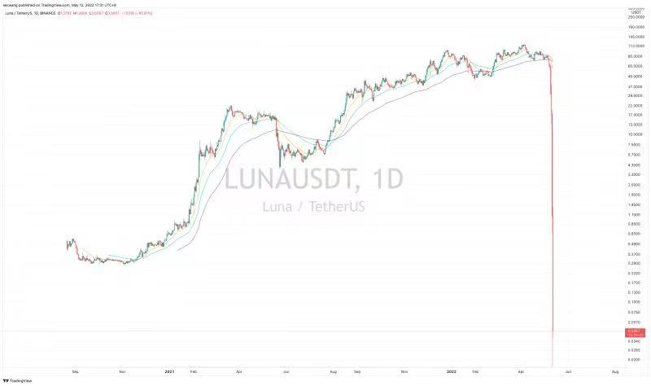

UST 与 LUNA 深度解析
UST 与 LUNA 深度解析
引言
在去中心化金融（DeFi）领域，Terra 区块链上的稳定币 UST 和其治理代币 LUNA 曾经引起广泛关注。UST 试图通过算法和市场机制来维持与美元的 1:1 价值锚定，而 LUNA 则用于维持 UST 的稳定性。然而，在 2022 年 5 月，这一体系经历了剧烈的市场波动，导致了所谓的“死亡螺旋”。本文将深入探讨 UST 和 LUNA 的机制、它们如何互相作用，以及导致崩溃的原因。
UST 与 LUNA 的机制

稳定币 UST 与治理代币 LUNA
- UST：一种算法稳定币，旨在与美元保持 1:1 的价值锚定。
- LUNA：Terra 区块链的原生代币，用于治理和维持 UST 的价格稳定。
双向销毁机制
UST 和 LUNA 之间存在一个核心机制，即通过双向销毁来维持 UST 的价值锚定。
- 恒定兑换率：价值 1 美元的 LUNA 可以兑换为 1 个 UST，反之亦然。
- 自由兑换：任何人都可以将 1 个 UST 换成价值 1 美元的 LUNA，或将 LUNA 换成 1 个 UST。
- UST 的生成：UST 只能通过销毁等值的 LUNA 来生成，不会凭空出现。
维持价格稳定的机制
当 UST 的市场价格偏离 1 美元时，套利者可以通过以下方式促使价格回归：
UST > 1 美元（例如 1.1 美元）：
- 操作：使用价值 1 美元的 LUNA 通过协议兑换成 1 个 UST。
- 结果：在市场上以 1.1 美元卖出 UST，获得 10% 的套利收益。
- 影响：增加市场上 UST 的供应，促使 UST 价格回落。
UST < 1 美元（例如 0.9 美元）：
- 操作：购买低价 UST，通过协议兑换成价值 1 美元的 LUNA。
- 结果：在市场上卖出 LUNA，获得 10% 的套利收益。
- 影响：减少市场上 UST 的供应，促使 UST 价格回升。
数学公式解析
套利机制
套利收益计算：
\[ \text{套利收益} = \left( \frac{P_{\text{market}} - P_{\text{peg}}}{P_{\text{peg}}} \right) \times 100\% \]
其中：
- ( P_{} ) 是 UST 的市场价格。
- ( P_{} ) 是 UST 的目标锚定价格（1 美元）。
供应调节
UST 供应变化：
当市场上 UST 被大量兑换为 LUNA 时，UST 的供应减少，反之亦然。
LUNA 价值的保障机制
Anchor 协议
Anchor 协议是 Terra 生态系统中的一个借贷平台，为 UST 存款提供高达 20% 的年化收益率（APR）。
- 高收益的来源：由借款人支付的利息和抵押品收益。
- 吸引资金流入：高利率吸引了大量资金购买 UST 并存入 Anchor，从而提高了 UST 的需求和 LUNA 的价值。
抵押借贷机制
- 抵押 LUNA 或 ETH：用户可以抵押 LUNA 或其他支持的加密资产。
- 借入 UST：以低利率甚至负利率借入 UST。
- 市场影响：增加了对 LUNA 的需求，因为更多的人需要 LUNA 来铸造 UST。
价格上升的循环
- 高收益吸引：Anchor 的高 APR 吸引了大量资金购买 UST。
- 需求增加：铸造 UST 需要销毁 LUNA，导致 LUNA 供应减少。
- 价格上涨：LUNA 供应减少且需求增加，价格因此上涨。
- 正反馈循环：LUNA 价格上涨，吸引更多投资者参与。
市场表现
- 2022 年 4 月：LUNA 的价格达到 120 美元。
- 市值：一度突破 430 亿美元。
- UST 的地位：成为仅次于 USDT 和 USDC 的第三大稳定币。
死亡螺旋的形成
当 UST 价格无法回归 1 美元
如果市场信心不足，UST 的价格持续低于 1 美元，套利机制可能无法有效恢复锚定。
负反馈循环
- UST 持有人抛售：由于恐慌，持有人以低价抛售 UST。
- 兑换压力增加：大量 UST 被兑换为 LUNA，增加了 LUNA 的供应。
- LUNA 价格下跌：供应增加且市场抛售，导致 LUNA 价格下跌。
- 兑换数量增加：LUNA 价格越低，每个 UST 可兑换的 LUNA 数量越多，加剧了 LUNA 的供应过剩。
- 死亡螺旋：LUNA 价格持续下跌，UST 价格无法恢复，整个系统陷入崩溃。
数学模型
LUNA 供应的激增
UST 兑换为 LUNA 的数量：
\[ N_{\text{LUNA}} = \frac{1}{P_{\text{LUNA}}} \]
其中：
- ( P_{} ) 是 LUNA 的市场价格。
当 ( P_{} ) 下降时，( N_{} ) 增加，导致 LUNA 供应迅速膨胀。
示例计算
当 LUNA = 10 美元：
\[ N_{\text{LUNA}} = \frac{1}{10} = 0.1 \]
当 LUNA = 0.5 美元：
\[ N_{\text{LUNA}} = \frac{1}{0.5} = 2 \]
当 LUNA = 0.01 美元：
\[ N_{\text{LUNA}} = \frac{1}{0.01} = 100 \]
崩溃的导火索：机构狙击
Citadel 等机构的介入
据传闻，机构投资者如 Citadel 利用市场机制，策划了对 UST 的攻击。
选择 5 月出手的原因
Anchor 协议的可持续性：
- 资金池枯竭：Anchor 用于支付 20% APR 的流动资金预计只能支持到 6 月。
- 庞氏风险：如果没有新资金进入，Anchor 的高收益无法维持。
美联储加息的影响：
- 市场环境恶化：5 月 4 日美联储加息后，全球市场趋紧。
- 收益率不合理：在其他收益率下降的情况下，Anchor 仍提供 20% APR，引发质疑。
Terra 流动性的削弱：
- 资金撤出：5 月 8 日，Terra 官方抽走了 1.5 亿美元的流动性，削弱了生态的稳定性。
攻击过程
大规模提款：
- 机构撤资：大型机构从 Anchor 提取了约 20 亿美元的 UST 存款。
- 市场抛售：大量 UST 被抛售，导致其价格下跌。
引发挤兑：
- 市场恐慌：UST 持有人担心价格继续下跌，纷纷抛售。
- 价格脱锚：UST 价格跌破 1 美元，套利机制失效。
死亡螺旋启动：
- LUNA 供应激增：UST 被大量兑换为 LUNA，LUNA 供应量膨胀。
- LUNA 价格崩溃：过度供应和市场抛售导致 LUNA 价格暴跌。
数据统计
LUNA 供应量变化：
日期 LUNA 供应量 崩溃前 约 3.5 亿枚 崩溃期间 超过 6.5 万亿枚 价格走势：

（图示：LUNA 价格在短时间内从 100 多美元跌至不足 0.01 美元）
结论
UST 和 LUNA 的崩溃揭示了算法稳定币在极端市场条件下的脆弱性。尽管通过套利机制维持价格稳定的设计在理论上可行，但在市场信心丧失和大规模抛售的情况下，机制可能失效，甚至加速系统的崩溃。投资者和开发者应从中吸取教训，谨慎对待高收益承诺和复杂的金融机制。